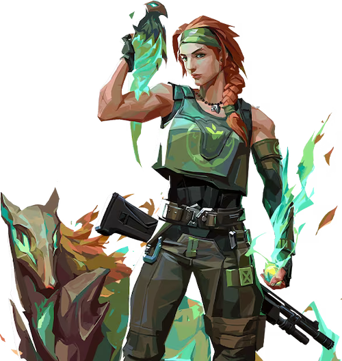

スカイ

国籍: オーストラリア
ロール: イニシエーター
スカイは自然の力を借りて仲間を支援し、敵を見つけ出す能力に優れています。彼女のアビリティは、チームのサポートや敵の位置を特定するのに役立ちます。
公式トレーラー
スキル
| スキル名 | 値段 | 所持上限 | 説明 |
|---|---|---|---|
| ガイディングライト (E) | 250 | 2個 | 鷹のトリンケットを構え、「発射」で鷹を前方に放つ。「発射長押し」でクロスヘアの方向に鷹を動かし、飛行中に「再使用」することで、閃光に変身させる。敵が可視範囲内にいた場合、攻撃が命中したかどうか確認することができる。 |
| トレイルブレイザー (E) | 300 | 1個 | タスマニアンタイガーのトリンケットを構える。「発射」で放った猛獣を操作することができる。操作中は「発射」で前方に飛び込み、スタンを与える爆発を引き起こす。直接命中した敵にはダメージを与える。 |
| リグロウス (C) | 150 | 1個 | ヒーリングトリンケットを構える。「発射長押し」で詠唱を行い、可視範囲内にいる味方を回復する。回復可能量を使い切るまで再使用できる。自分自身を回復することはできない。 |
| シーカー (X) - アルティメット | - | 1個 | シーカートリンケットを構える。「発射」で3体のシーカーを放ち、最も近くにいる敵3体を追跡させる。シーカーがターゲットに到達すると、対象の視界を悪化させる。敵はシーカーを破壊可能。 |
立ち回りとおすすめマップ
攻めの立ち回り
スカイはトレイルブレイザーとシーカーを使い、敵の位置を特定しながらサイトに進行します。サイトに入る際は、ガイディングライトと一緒に入ることで有利に敵と撃ち合うことが可能です。
守りの立ち回り
スカイは守りにおいても、ガイディングライトやトレイルブレイザーで敵の位置を探知し、味方に情報を提供します。リグロウスで味方の体力を回復させ、長期戦に持ち込むことが可能です。
リグロウスの活用
リグロウスを使って、ラウンド中にダメージを受けた味方を回復します。特に重要なラウンドでは、リグロウスの使用が勝敗を分けることがあります。
シーカーの使い方
シーカーは広範囲で敵を探知するため、敵の位置を把握し、チームの進行をサポートします。敵が密集している場所で使用することで、戦況を有利に進めることができます。